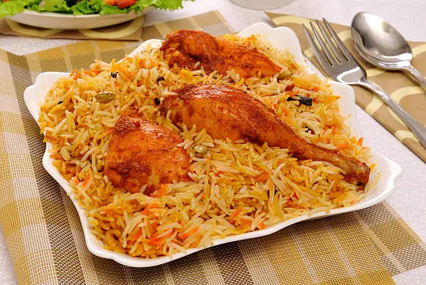

Herati Qabuli Palaw
Ingredients:
- 2 cups basmati rice
- 500g lamb
- 1 onion, chopped
- 1/2 cup carrots
- 1/4 cup raisins
- Spices: cumin, cardamom, black pepper, cinnamon
Instructions:
- Sauté onions and lamb in oil until browned.
- Add spices and water. Cook until tender.
- Cook rice separately, mix with meat broth.
- Fry carrots and raisins, then layer on top of rice.
- Steam together for 20 minutes before serving.
Author: Farida Faqiri